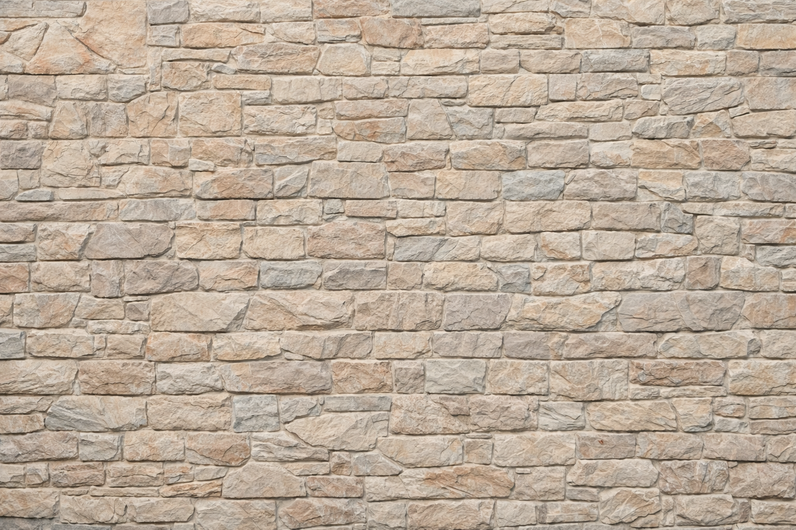
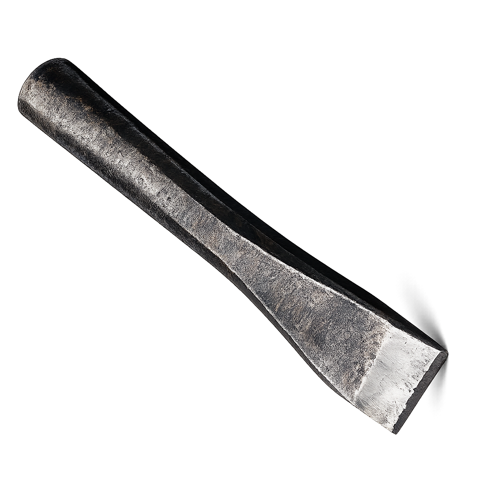

Verschillende stijlen
-
Light
Minor Visual Interface Design
-
Light italic
Minor Visual Interface Design
-
Medium
Minor Visual Interface Design
-
Medium italic
Minor Visual Interface Design
-
Bold
Minor Visual Interface Design
-
Bold italic
Minor Visual Interface Design
-
Extra bold
Minor Visual Interface Design
-
Ultra bold
Minor Visual Interface Design
-
Light shadowed
-
Condensed
Minor Visual Interface Design
-
Condensed bold
-
Bold extra condensed
-
Ultra bold condensed
-
Shadowed
-
Extra bold display
Hoofdletters
- A
- B
- C
- D
- E
- F
- G
- H
- I
- J
- K
- L
- M
- N
- O
- P
- Q
- R
- S
- T
- U
- V
- W
- X
- Y
- Z
Kleine letters
- a
- b
- c
- d
- e
- f
- g
- h
- i
- j
- k
- l
- m
- n
- o
- p
- q
- r
- s
- t
- u
- v
- w
- x
- y
- z
Cijfers
- 0
- 1
- 2
- 3
- 4
- 5
- 6
- 7
- 8
- 9
Lettergrootte
- 64px Gill Sans
- 56px Humanistisch schreefloos
- 48px Monotype Corporation
- 40px Geïnspireerd op Edward Johnston's Underground lettertype
- 32px Gill Sans wordt geclassificeerd als een humanistisch schreefloos lettertype vanwege zijn organische, kalligrafische kwaliteiten.
- 16px De LNER-spoorwegen namen het over in 1929, en Penguin Books volgde in 1935, waarmee het de status van hét Britse lettertype van de twintigste eeuw verwierf.
Hak de letters uit het blokje steen


G
I
L
L
S
A
N
S
1
9
2
8